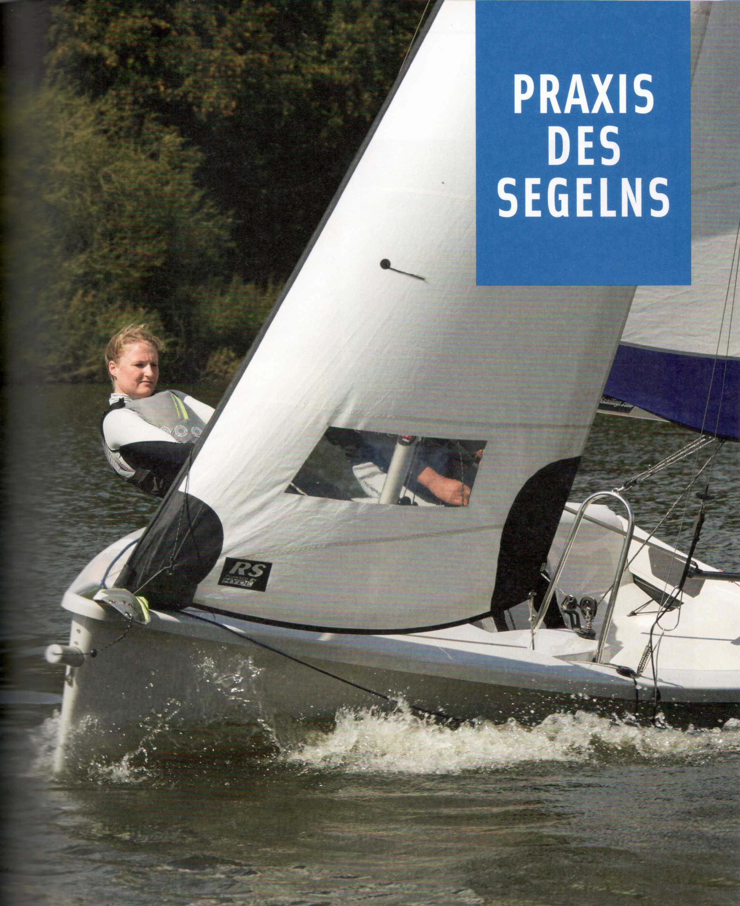
Um dem Wind beim Setzen der Segel keine Angriffsfläche zu bieten, muss das Boot mit dem Bug im Wind liegen. Möglichst sollte auch das Heck schwojen, das heißt frei ausschwingen, können, dann stellt sich das Boot, ähnlich einer Wetterfahne, selbst in den Wind. Ist dies am Liegeplatz nicht möglich, muss man sein Boot an die Leeseite eines Steges, an einen Pfahl oder eine Boje paddeln oder mit Leinen verholen.
Damit jeder an Bord weiß, was läuft und was er zu tun hat, ist eine einheitliche sogenannte Kommandosprache entwickelt worden. Sie besteht aus der Manöveranweisung und der Ausführungsmeldung.
Als Manöver werden alle Tätigkeiten bezeichnet, die irgendwelche Veränderungen in der Bootsführung bewirken. Beispielsweise Segelmanöver, Ablegemanöver, Ankermanöver etc.
Um die Segel setzen zu können, müssen sie zunächst einmal angeschlagen werden. Fälschlicherweise wird das An- und Abschlagen der Segel oft als Auf- und Abtakeln bezeichnet. Das aber bedeutet das Aufrichten und Abnehmen des gesamten Riggs.
Zunächst die Großschot am Baum und am Fußbeschlag anschäkeln.
Kontrollieren, ob sie nicht blockiert. Achtknoten in den Tampen der Großschot.
Statt der Mastnut kann es auch eine Mastschiene sein, auf die Rutscher gesetzt werden. Bevor man den Kopf anschäkelt, kontrollieren, ob das Vorliek nicht vertörnt ist, indem man es vom Hals zum Kopf durch die Hand laufen lässt.
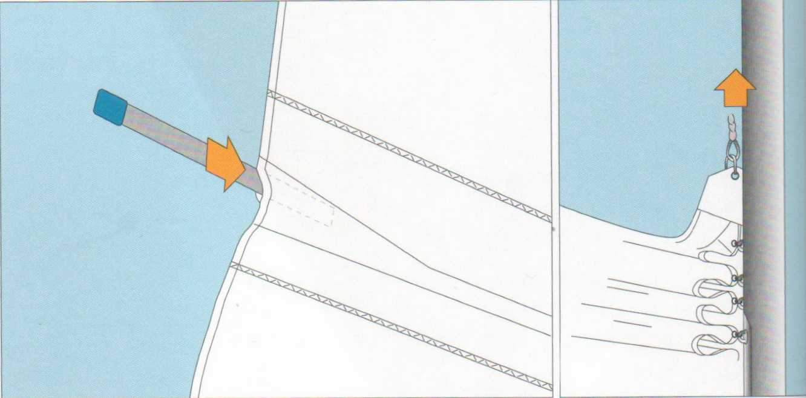
Die Segellatten in ihre Taschen stecken. Entweder gleich nachdem man das Segel aus seinem Sack geholt hat oder während des Segelsetzens (wenn man zu zweit ist). Einige Latten klemmen sich fest, andere müssen eingebunden werden.
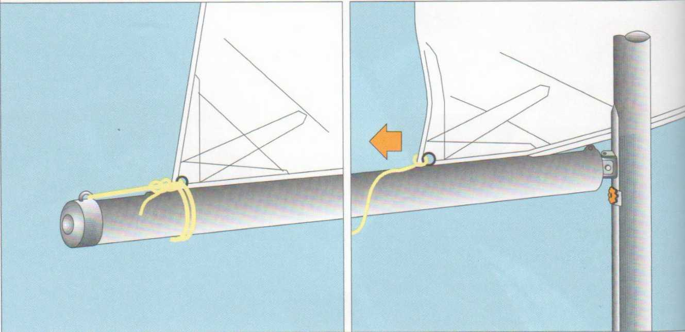
Das Segel eventuell am Baum zeisen (festbinden), damit es nicht ausweht.
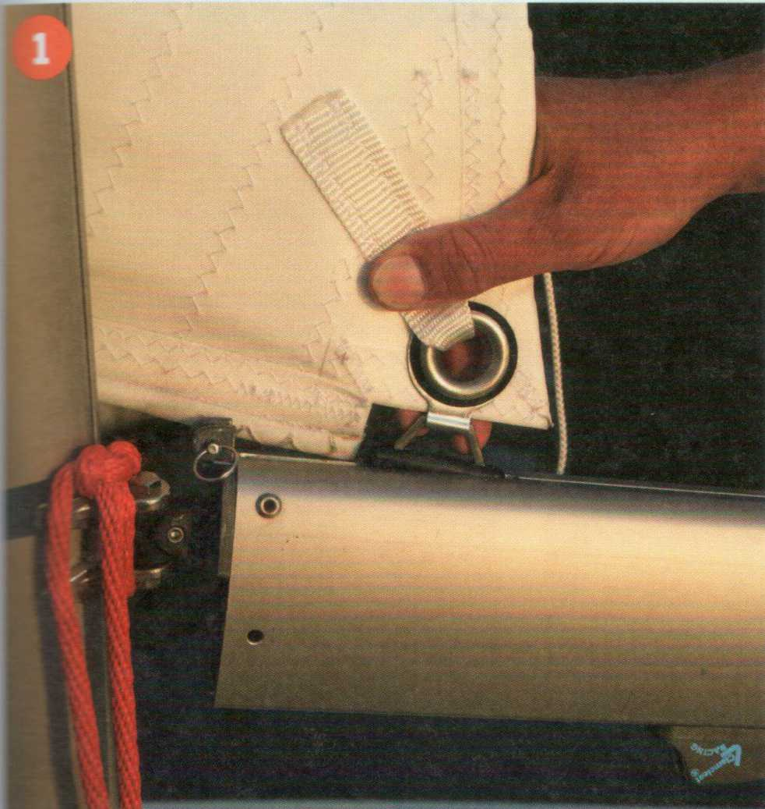
1 Das Unterliek am Schothorn in die Baumnut einziehen und nach hinten durchholen.
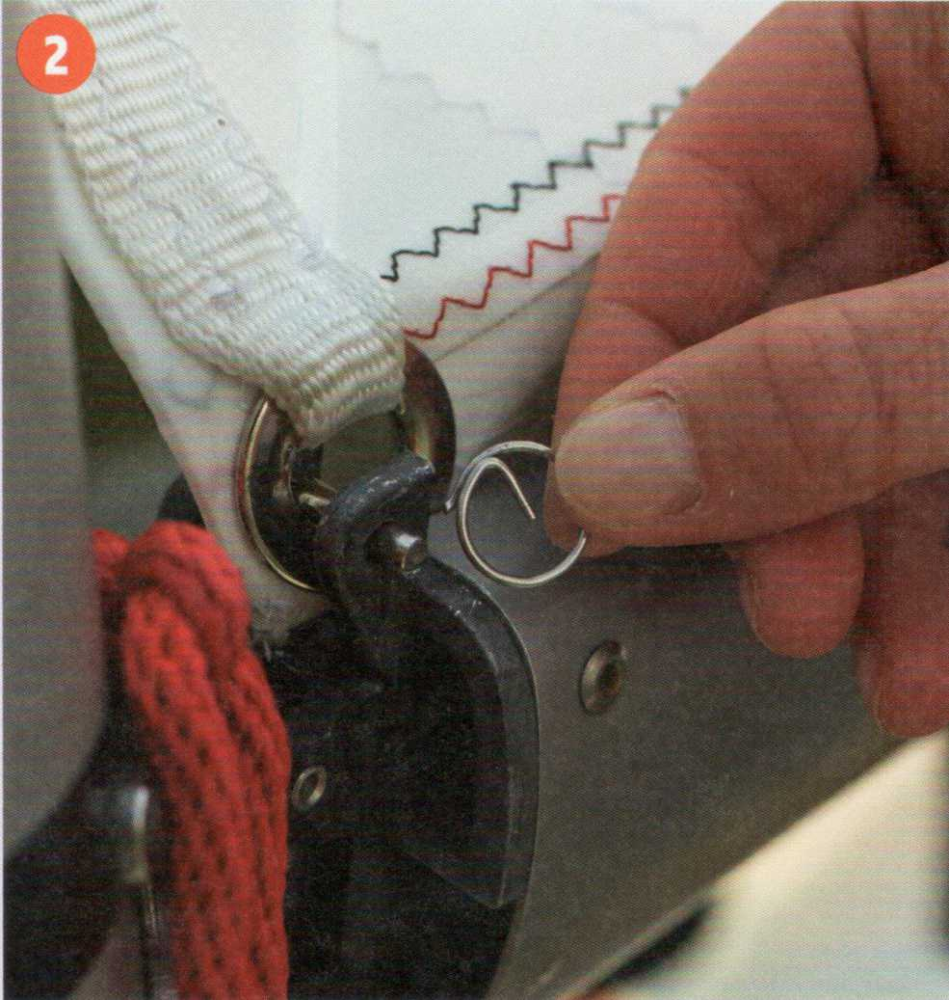
2 Die Halskausch vorn am Baum befestigen.
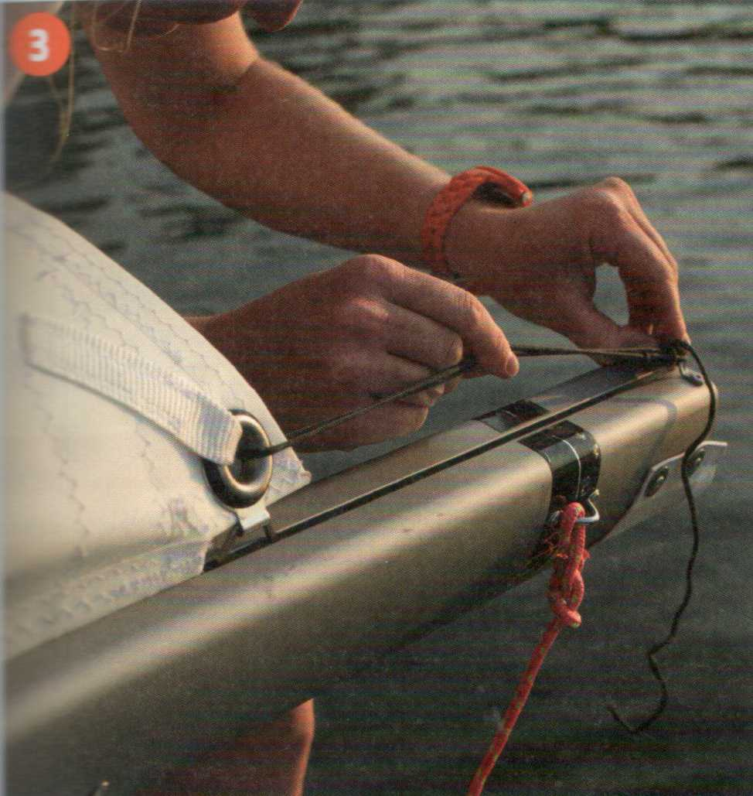
3 Das Unterliek stramm durchholen, und das Schothorn an der Baumnock befestigen.
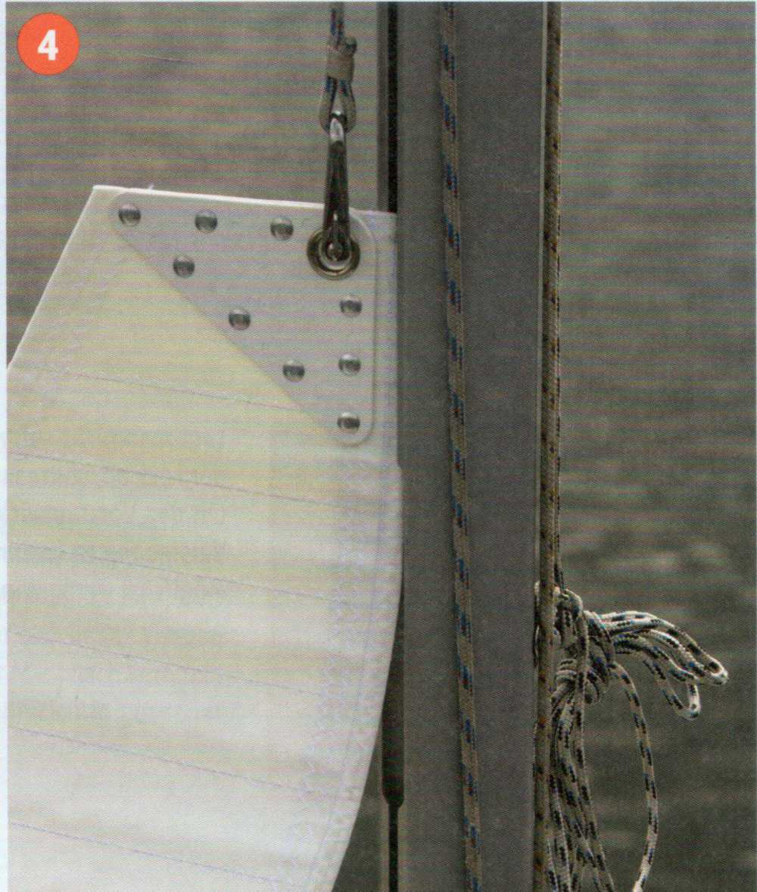
4 Das Vorliek am Segelkopf in die Mastnut einführen und das Großfall am Kopfbrett anschäkeln. Schon ist das Großsegel klar zum Setzen.
| Merke |
|---|
| Beim Segelanschlagen niemals das jeweilige Fall aus der Hand lassen, es könnte sonst allzu leicht unerreichbar in den Mast hochrauschen. |
Legt man nicht sofort nach dem Anschlagen der Fock ab, sollte man sie zusammenfalten, um das Vorstag wickeln oder als Paket ans Vorstag zeisen (anbinden). Oberste Priorität: möglichst wenig Windangriffsfläche.
| Kommandotafel Segelsetzen |
|---|
|
Klar zum Setzen des ...segels! ...segel ist klar zum Setzen! Heiß ...segel! |
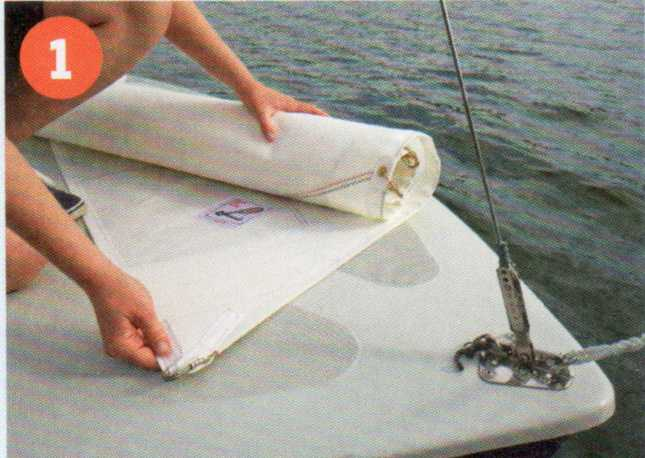
1 Die Fock etwas ausrollen, den Segelhals heraussuchen (man erkennt ihn am Zeichen des Segelmachers),...
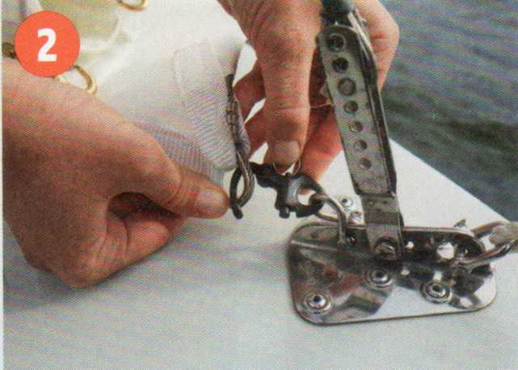
2 ... mit einem Schnappschäkel am Vorstag-beschlag befestigen...
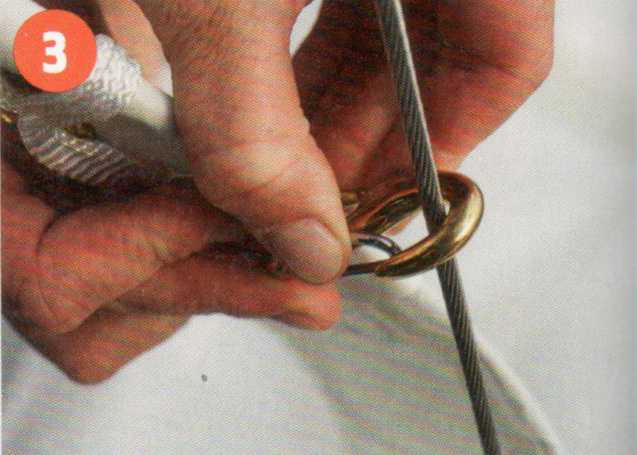
3 ..., und die Stagreiter der Reihe nach am Vorstag einhaken.
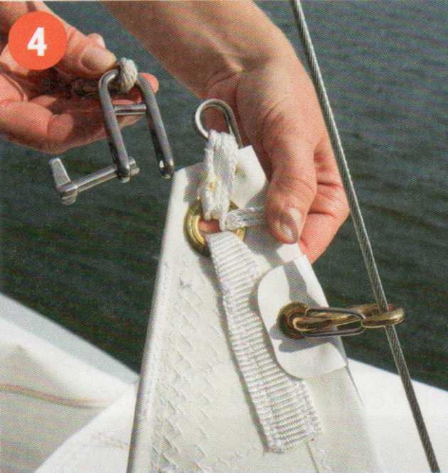
4 Den Kopf der Fock einschäkeln, und das Fall zwischenzeitlich auf der Klampe belegen.
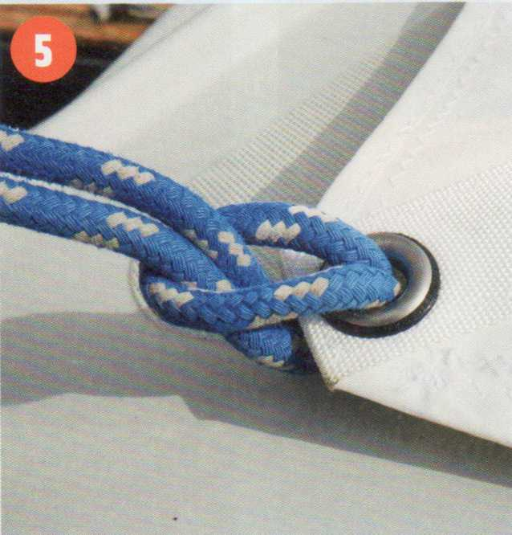
5 Ein Ende der Fockschot doppelt durch die Kausch des Schothorns führen, und den Rest der Schot durchziehen.
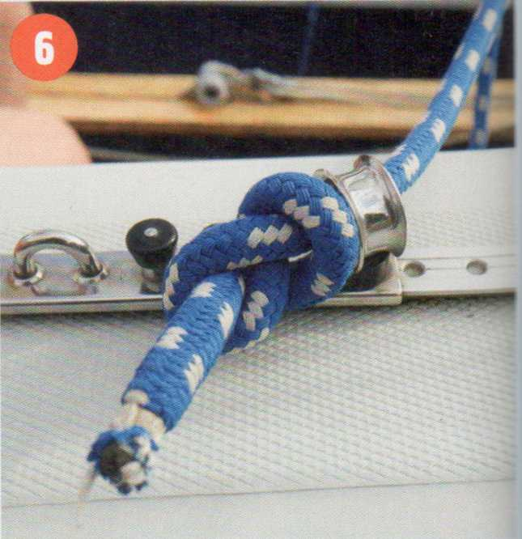
6 Die Schoten außen um die Wanten herum durch die Leitösen oder Decksaugen führen und mit einem Achtknoten vor dem Ausrauschen sichern.
Wichtigste Voraussetzung zum Segelsetzen ist: Das Boot muss im Wind liegen!
Das Großsegel wird zuerst gesetzt: Hand über Hand wird das Fall durchgeholt, bis der Segelkopf am Masttopp sitzt. Dabei ist es sehr hilfreich, wenn das zweite Crewmitglied den Baum anhebt. Vor dem Belegen auf der Klampe muss unbedingt kontrolliert werden, ob das Fall richtig stramm durchgesetzt ist. Jetzt kann bei Kielbooten die Dirk lose gegeben oder bei Gleitjollen der Niederholer eingepickt werden.
Die Fock wird ähnlich gesetzt: Einfach das Segel setzen und zum Schluss, bevor das Fall auf der zweiten Klampe belegt wird, hilft der Vorschoter, indem er sich in das Vorstag hängt. Damit kommt der Mast nach vorn und das Vorliek der Fock kann richtig gespannt werden.
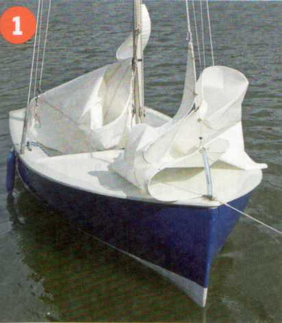
1 Das Boot liegt im Wind, Großsegel und Fock sind vorbereitet zum Segelsetzen.
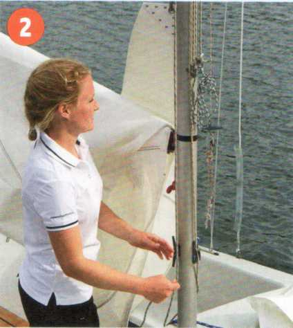
2 Das Großfall wird gelöst...
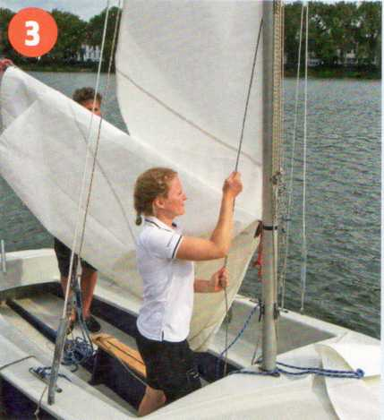
3 ... und das Vorliek in die Nut des Mastes eingeführt. Der Baum sollte dabei angedirkt oder von einer zweiten Person hochgehalten werden.
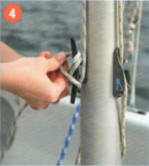
4 Zum Schluss wird das Fall auf der Klampe belegt und der Rest sauber aufgeschossen.
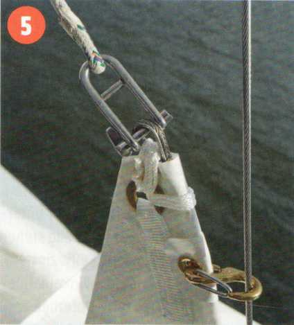
5 Das Fockfall wird an den Segelkopf der Fock angeschäkelt.
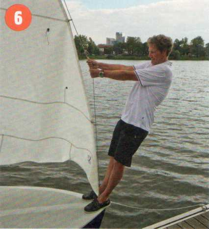
6 Das stramme Durchsetzen und Belegen des Fockfalls wird erleichtert, wenn der Vorschoter sich ins Vorstag hängt.
| Typische Anfängerfehler |
|---|
|
Das Boot liegt nicht genau im Wind. Das Achterliek des Großsegels hakt unter der Pinne. Die Großschot ist nicht richtig gelöst. Das Fockfall ist vertörnt und kann nicht richtig gespannt werden. Die Achtknoten in den Schoten werden vergessen. |